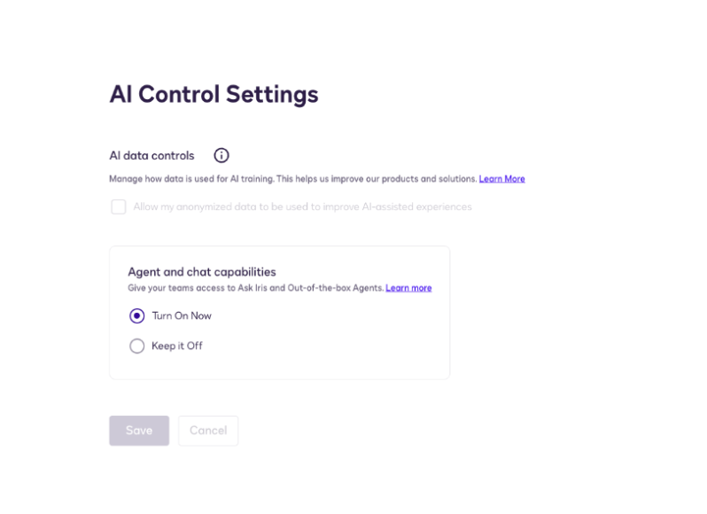
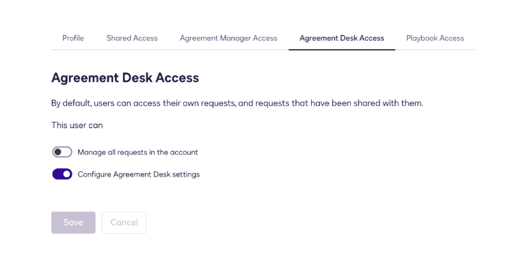
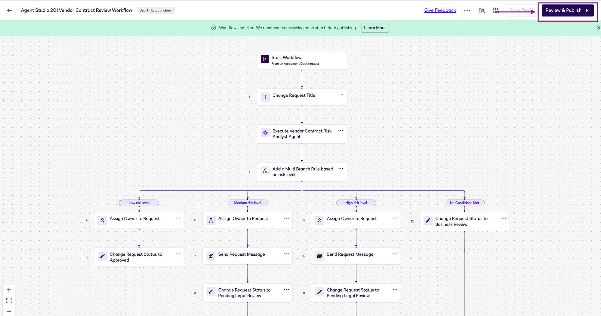
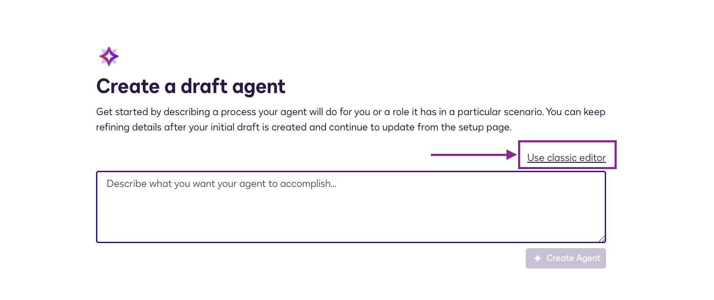
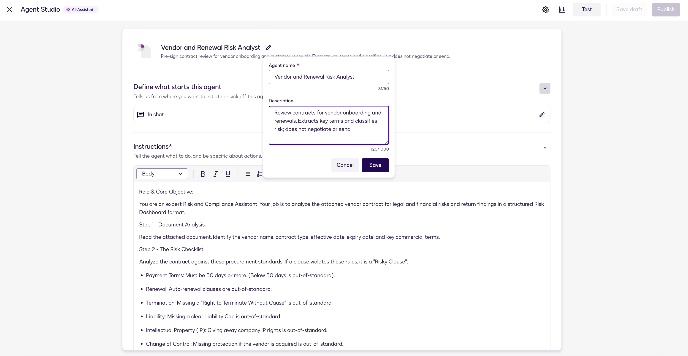
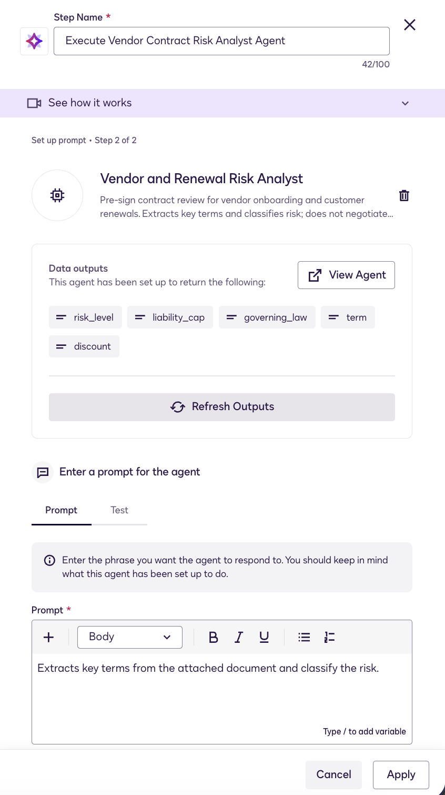

Risk-based routing: Docusign Agreement Desk + Agent Studio + Workflow Builder
Build a risk-scoring agent, wire it into a Workflow Builder pipeline, and watch contracts route themselves — low risk to signature, high risk to human review.
Pick your persona
We will implement one repeatable architecture, two business motions. Procurement onboards vendors; Sales renews and expands customers. The same agent handles both , the toggle changes the category you select, who reviews escalations, and the closing status.
Before you begin
0.1 · The scenario
At Fontara, Procurement and Legal onboard high-value vendors one email thread at a time.
A business user emails a draft vendor contract, Legal manually hunts for the liability cap and governing law, then someone routes it for signature. It is slow, inconsistent, and hard to audit.
In this lab you replace that with an automated process: an Agreement Desk request starts a workflow that hands the contract to a Risk Analyst agent, which extracts the key terms and classifies risk. LOW risk goes straight to the vendor for signature; MEDIUM or HIGH risk waits for Legal.
At Fontara, Sales and Customer Success process high-value renewals by emailing Legal and Finance.
Reps email draft renewal orders for review, so pricing and clause policy get applied inconsistently, high-value deals stall, and nobody can see where a renewal is stuck. In this lab you replace that with an automated process: an Agreement Desk request starts a workflow that hands the order form to a Risk Analyst agent, which extracts discount, term, and governing law and classifies risk. LOW risk goes straight to the customer for signature; MEDIUM or HIGH risk waits for Finance and Legal.
0.2 · The flow at a glance
Four surfaces, one loop
| Docusign Layer | Role in this lab |
|---|---|
| Agreement Desk | Intake and status hub. The business user starts here, uploads the contract, and can always see where the request sits. |
| Workflow Builder | The orchestrator. Starts from the Desk request, fetches the document, calls the agent, and owns all the deterministic branching. |
| Agent Studio | The governed intelligence layer. Your Risk Analyst agent is a role-based digital team member with natural-language instructions and scoped data access - it reasons, it does not decide the routing. |
| eSignature | The commit step. Nothing reaches a signer unless a branch explicitly allows it. |
Email with contract → Agreement Desk request submitted → Workflow triggered automatically → Execute Risk Analyst agent → Workflow branches on risk_level → Status update & approval routing.
0.3 · Explore the decision tree before you build it
This is the exact routing logic you'll build and exercise across Stages 1 to 3. Change the controls below the diagram and watch the live path light up - that's the same branch your agent and workflow will take at runtime.
0.4 · Learning objectives
Import a Request Type, submit a request, and attach the document the rest of the flow depends on.
Write instructions and add capabilities that reliably evaluate the request and respond with risk analysis.
Automatically trigger the workflow on Agreement Desk request submission, invoke the agent and capture its structured output into variables, and branch deterministically.
0.5 · Prerequisites
A Docusign IAM (Intelligent Agreement Management) environment - sandbox or non-production - with the features and permissions below. Everything uses synthetic data only, no production accounts or real party data.
0.5.1 · Products enabled
setup- Agreement Desk - available and configurable (Request Types, forms, statuses).
- Workflow Builder - enabled, with permission to create and publish workflows.
- Agent Studio and agents-in-workflows - enabled. Your PSA or facilitator will confirm this is switched on for your partner sandbox.
0.5.2 · Permissions
setupEach participant or pair needs:
- Access to Agreement Desk - can view and manage the Requests page.
- Access to Workflow Builder - can create and publish workflows.
- Permission to manage requests, or at minimum to create and edit requests for the lab Request Type.
- Agent Studio build access - enabled by an org admin before Stage 1. Click path below.
- Open the Admin tab at apps-d.docusign.com/admin/admin-dashboard.
- Go to AI Control Settings and ensure Agent and chat capabilities are turned on.

- In case they are turned off by default, select Turn On Now & click Save.
- Go to Users and find the participant's account row.
- Click Actions next to their name, then select Manage AI Agents Access.
- Under AI Agents Access, enable:
- Create new AI contract agents
- Share, delete, and configure AI contract agents
- Click Save.
- Go to the Agreement Desk Access tab.
- Enable Configure Agreement Desk settings.
- Click Save.

0.5.3 · Download the lab assets
setupFrom the GitHub repo your facilitator provides, download:
| Asset | What it's for |
|---|---|
Agent Studio 201 Vendor Contract Review Workflow.zip | The prebuilt workflow and Request Type. Leave it zipped — do not extract. |
Agent Studio 201 - Vendor Contracts.zip | The Agreement Desk Request Type — automatically added when you import the workflow. |
MSA_high.docx, MSA_low.docx, MSA_medium.docx | Sample agreements for testing the three risk paths. |
0.5.4 · Import the workflow
setup- Under the Agreements tab, navigate to Workflows.
- Click Import Workflow (under Create Workflow).
- Upload the workflow zip from the workshop kit provided by your facilitator. Leave the file zipped — do not extract it first.
- Click Review & Publish.
- If prompted, click Authorize My Account to complete the one-time agent consent for this environment.
- Click through Next, then Publish.

0.5.5 · Upload sample agreements
setup- Go to Agreements in your account.
- Navigate to Completed.
- Click the + icon and select Upload.
- Upload the sample agreements (
MSA_high.docx,MSA_low.docx,MSA_medium.docx) from the workshop kit.

0.6 · How to use this handbook
| Element | What it means |
|---|---|
| Step checkbox | The box next to each numbered heading. Tick it when done; the sidebar ring for that stage fills. |
| Prompt block | Copy-paste ready. Use the Copy button in the top-right corner. |
| Checkpoint | The green box at the end of a step. Don't move on until it's true. |
| Persona toggle | Switches the page between the Procurement and Sales motions. |
Stage 1 · Agent Studio
Build the agent first. It's the only artifact in this lab you create from scratch, it's where the actual skill lives, and the workflow you configure in Stage 2 needs to point at it - so it has to exist first.
1.1 · Create the agent & set identity
- Open the Agents tab (under Automations).
- Click on Create New.
- Click on Use classic editor.

- Click the pencil icon next to My new agent. In the modal that appears, enter:
Agent nameVendor and Renewal Risk AnalystDescriptionReview contracts for vendor onboarding and renewals. Extracts key terms and classifies risk; does not negotiate or send.Then click Save.

1.2 · Define what starts this agent
- Click In chat under "Define what starts this agent".
- In the prompt field, type:
- Click Save, then scroll to the bottom and click Save again.
- Now click In a workflow (next to "In chat").
- Add the following outputs:
| Output name | Format |
|---|---|
risk_level | String |
liability_cap | String |
governing_law | String |
term | String |
discount | String |
- Scroll to the bottom and click Save.
1.3 · Write the instructions
Paste this into the Agent's Instructions field. There is no separate output-schema builder in Agent Studio - the response shape you want is described here, in plain language, so be explicit about field names and allowed values.
1.4 · Add capabilities
- Under Capabilities, click Add.
- Select Manage Requests, Find Agreements and Review Documents.
- Click Add Capabilities.
1.5 · Test the agent, then publish
- Click Test to test the agent before publishing.
- Click the + icon, click Add Agreements, and search for the low-risk document uploaded in the prerequisites.
- Run the starter prompt configured in 1.2, then optionally try a more detailed prompt:
Starter prompt (from 1.2)Extracts key terms from the attached document and classify the risk.Detailed prompt (optional)Analyze this vendor contract against our procurement risk checklist. Return risk_level, liability_cap, governing_law, term, and discount. Flag violations with severity and section reference.
- Verify the agent returns the correct
risk_leveland all five output fields are populated. - Click Save draft, then Publish.
Stage 2 · Import & wire up
Both the Request Type and the workflow are prebuilt and supplied as ZIPs, so the whole room starts from an identical, working configuration. Your job here is to verify the tenant-specific references point at your objects, and publish. What matters is understanding what's inside - open each step as you verify it.
2.1 · Verify the Request Type
- Click on Settings.
- Click on Request Types.
- Verify a Request Type named Agent Studio 201 - Vendor Contracts is listed.
2.2 · Verify the trigger & Request Type
- Navigate to Workflows (under Agreements or Automations).
- Open the workflow imported during the prerequisites.
- Click on the Start workflow step.
- Verify the start method is From Agreement Desk.
- Set the Request Type to Agent Studio 201 - Vendor Contracts.
2.3 · Execute AI Agent
Open the Execute AI Agent step in the workflow. Configure the following:
- Select Agent — from the dropdown, select your published
Vendor and Renewal Risk Analyst. If it doesn't appear, go back to Stage 1 and publish your agent. - Data outputs — confirm the five output fields are visible:
risk_level,liability_cap,governing_law,term,discount. - Enter the prompt — in the chat message / prompt field, enter:
Extracts key terms from the attached document and classify the risk.

2.4 · Walk the branch
Open the branch step. Confirm two cases, then follow each path so you know what to expect in Stage 3.
| Case | Condition | Path |
|---|---|---|
| 1 · Low risk | risk_level == "LOW" | Change Request Status to Approved. The request owner can then send the document for eSignature. |
| 2 · Medium or high risk | risk_level == "MEDIUM" OR risk_level == "HIGH" | Assign Owner (Legal team), Send Request Message to notify them, then Change Request Status to Pending Legal Review. |
2.5 · Publish the workflow
- If you have made any changes, click Review & Publish in the workflow editor.
- Click through Next, then Publish.
Stage 3 · Trigger & validate
Create a request in Agreement Desk, upload a contract, and confirm the workflow fires correctly.
3.0 · Create a request in Agreement Desk
- Open the Agreements tab.
- Click Requests in the left menu.
- Click Create Request.
- Select Agent Studio 201 - Vendor Contracts Request Type.
- Fill the form (with sample values of your choice, reference provided below):
- Vendor Name: use the name matching your document — Keranos Digital Media (LOW), Pine Care (MEDIUM), or DataVault Dynamics (HIGH)
- Requestor Name: Your name
- Upload the LOW risk contract document from the workshop kit.
- Click Submit.
3.1 · Scenario 1 - LOW risk, straight through
- Navigate to Agreements → Workflows, find the workflow, click View Workflow Runs.
- Find the latest run and click the instance.
- Confirm the LOW branch fired and request status changed to Approved.
risk_level = LOW → the LOW branch runs → status changes to Approved.
3.2 · Scenario 2 - MEDIUM/HIGH risk, human review
Create another request: Agreements → Requests → Create Request → Agent Studio 201 - Vendor Contracts. Upload the MEDIUM or HIGH risk contract from the workshop kit, fill in the form, and submit. Navigate to Agreements → Workflows, find the workflow, click View Workflow Runs.
MEDIUM or HIGH → the MED/HIGH branch runs → owner assigned (Legal team) → request message sent → status changes to Pending Legal Review.
3.3 · Scenario 3 - missing or malformed document, fallback
Create another request but either skip the document upload entirely, or attach a deliberately unusable file (an empty document, or an image with no readable text).
risk_level = HIGH → the HIGH branch fires → routed to Legal for human review.
3.4 · Validation checklist
- Agent - returns the expected outputs;
risk_levelis always one of the three literal values (LOW, MEDIUM, HIGH); capabilities let it read the document but not send anything. - Agreement Desk - the Request Type imported and activated cleanly; requests carry one document; statuses advance at each stage.
- Workflow - published, not draft; the trigger fires only for the right Request Type; both branches are reachable; the agent reads the attached document correctly.
3.5 · Limitations & guardrails
Agent step constraints
- Request size, execution timeout, and rate limits all apply to the agent step.
- Use short sample documents and simple prompts in workshops and demos.
- Agent output is probabilistic. Validate the shape, and always have a fallback branch - which is exactly why Scenario 3 exists.
Import constraints
- Imported workflows arrive as drafts and need tenant-specific references re-pointed - Request Types, statuses, agents, connected systems, recipients.
- Agent and newer step types may not map cleanly on import; verify them step by step rather than assuming.
- Always do a test pass after importing, before declaring anything ready. That's what Stage 3 is.
Design guardrails
- Humans in the loop for consequential calls. LOW can be automated; MEDIUM and HIGH should not be. Give the reviewer the agent's reasoning so review is fast, not skipped.
- The agent scores, the workflow decides. Keep routing logic deterministic and auditable in Workflow Builder rather than asking the agent to take actions.
- Scope capabilities tightly. A review agent needs to read documents. It does not need to send envelopes.
- Fail closed. When in doubt, return the request - never send for signature on an assumption.
Recap
Agreement Desk captured the request and the document → Workflow Builder fetched it and orchestrated the run → an Agent Studio Risk Analyst read the contract and scored the risk → deterministic branching sent LOW straight to eSignature, MEDIUM/HIGH to a human, and anything broken back to the submitter. Intake once, analyze with an agent, route with Workflow Builder, sign with eSignature: all inside Docusign, all auditable.
Reuse the pattern
The same four-surface shape carries directly to other scenarios: NDA triage, customer renewals, procurement inbound review, or any department-specific risk workflow. Swap the agent's instructions and the branch thresholds; the architecture doesn't change.
Stage 4 · The CLM connection
4.1 · Two stages in the lifecycle, one agent
conceptThis lab's Workflow Builder workflow handles intake: a new vendor MSA is submitted via Agreement Desk, the agent reviews it, and the workflow routes to signature or legal review. That covers the front door.
CLM handles a different point in the same lifecycle: negotiation and execution. An MSA is already inside CLM, being redlined and reviewed. Once the legal team finishes a round of changes, the CLM workflow can call the same agent again - now to extract the final risk posture before the document routes for signature. Same agent, different trigger, different moment in the process.
The "Use AI Agent" step is the bridge. CLM is the orchestration surface; Agent Studio is the reasoning layer. CLM handles the structured steps - approvals, merges, signatures, archiving. The agent handles the part that requires judgment: read the current version of the document and return a structured answer the workflow can act on.
4.2 · What the "Use AI Agent" step looks like in a CLM workflow
demoIn a CLM workflow for MSA negotiation, the "Use AI Agent" step is configured with five fields. Here is how each one maps to the Vendor Risk Analyst scenario:
| Field | Value for the Vendor and Renewal Risk Analyst |
|---|---|
| Agent | Select the published Vendor and Renewal Risk Analyst from the agent picker. This is the same agent built in Stage 1 - no second version needed. |
| Chat Message | The prompt the workflow sends at step execution, for example: "Analyze this MSA and return JSON with risk_level, liability_cap, governing_law, term, and discount." Same prompt shape as the Workflow Builder version. |
| Document (optional) | Pass the current CLM agreement document here so the agent reads the live negotiated version, not a cached copy. |
| Run agent as | An admin user who has completed one-time OAuth consent for this environment. Consent is per-environment - sandbox consent does not carry to production. The step fails silently if consent has not been completed. |
| Output variable | Name the output variable, for example AgentResponse. The workflow then reads AgentResponse.AgentFinalResponseXml to branch on risk_level. |
4.3 · What the output variable contains
demoAfter the step runs, the agent's response is processed into a structured XML variable. The top-level fields are:
The CLM workflow reads AgentFinalResponseXml to find risk_level and routes accordingly. Unlike Workflow Builder, which maps agent output directly to named variables, CLM requires the workflow to navigate the XML structure.
| risk_level value | What the CLM workflow does next |
|---|---|
LOW | Route to the signature step. No human review required. |
MEDIUM or HIGH | Route to a Legal task step. The task surfaces the agent's extracted terms (liability_cap, governing_law) so the reviewer can act without re-reading the full MSA. |
| empty or unexpected | Route to a fallback task for manual triage. Do not proceed to signature. |
risk_level, liability_cap, etc.). In CLM those fields sit inside AgentFinalResponseXml and the workflow must parse the XML path to read them. Design CLM branch conditions accordingly.The full picture
You built one agent - the Vendor and Renewal Risk Analyst - and it runs in two places. In Workflow Builder it handles the front door: a new vendor MSA comes in via Agreement Desk, the agent reviews it, and the workflow routes the request. In CLM it handles the negotiation stage: once a contract is inside CLM and being reviewed, the workflow calls the same agent to score the final version before routing to signature. The agent handles the judgment layer; the workflow surface - Workflow Builder or CLM - handles the process layer. You don't build two agents. You build one good agent, publish it, and put it where the work already happens.